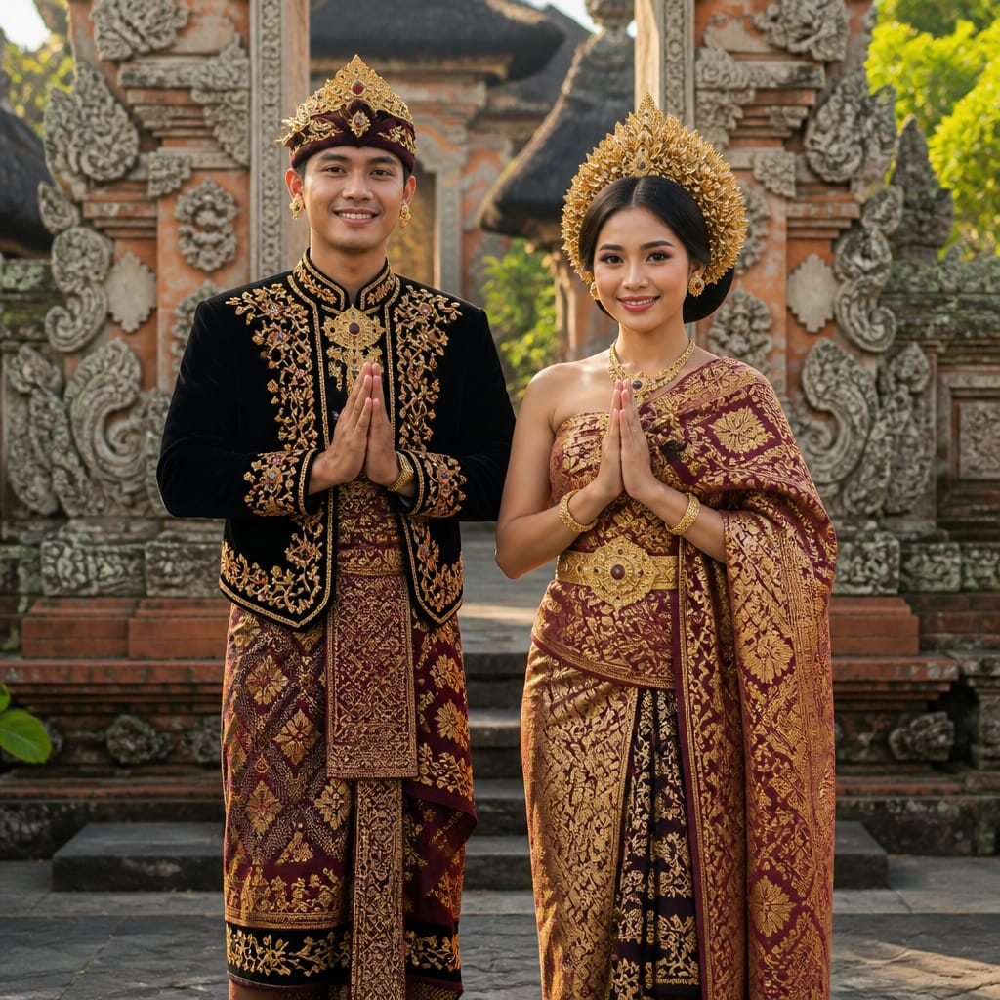
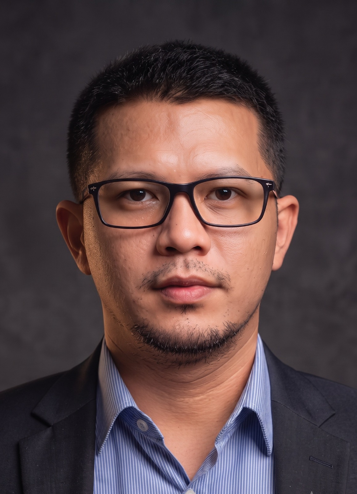
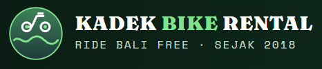
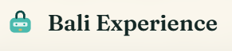
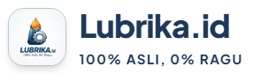
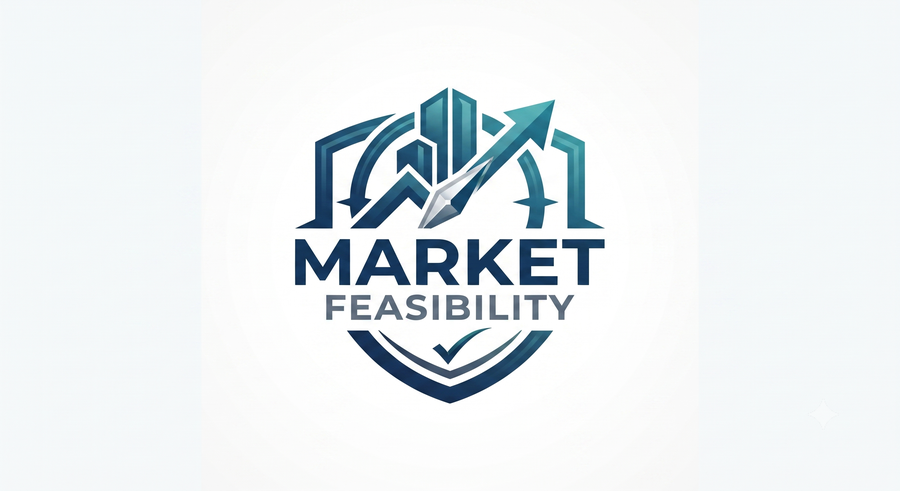

Pendiri & CEO
Founder & CEO
Seorang Strategic Business Leader dengan pengalaman lebih dari 20 tahun dalam pengembangan bisnis, retail, dan startup. Berhasil mendorong pertumbuhan hingga 35.6% secara nasional, membangun tim lintas fungsi, serta merancang strategi kategori yang menguntungkan. Dengan latar belakang akademik Master of Innovation Systems & Technology, beliau berkomitmen mendukung UMKM Bali dan dunia usaha profesional untuk go digital dan berdaya saing global.
A Strategic Business Leader with over 20 years of experience in business development, retail, and startups. He has driven national revenue growth of up to 35.6%, built cross-functional teams, and designed profitable category strategies. With an academic background in Innovation Systems & Technology, he is committed to helping Bali's SMEs and professional businesses go digital and compete globally.
Masril Novies Mondra

Aplikasi rental motor untuk wisatawan, melayani sejak 2018.
Motorbike rental app for tourists, live since 2018.

Aplikasi tur & pengalaman wisata interaktif dengan booking online.
Interactive tour & experience booking app.

Marketplace produk oli & pelumas terpercaya, 100% asli.
Trusted marketplace for genuine lubricant products.

Aplikasi analisis kelayakan pasar untuk keputusan bisnis yang lebih tepat.
Market feasibility analysis app for smarter business decisions.
Menjadi mitra strategis bagi UMKM Bali dan dunia usaha profesional dalam transformasi digital, menghadirkan solusi inovatif yang berkelanjutan dan berdaya saing global.
To be a strategic partner for Bali SMEs and professional businesses in digital transformation, delivering innovative and sustainable solutions with global competitiveness.
Lebih dari dua dekade pengalaman dalam retail, startup, dan pengembangan bisnis.
Over two decades of experience in retail, startups, and business development.
Terbukti mendorong revenue nasional hingga 35.6% melalui strategi ekspansi pasar.
Proven to drive national revenue growth up to 35.6% through market expansion strategies.
Komitmen mendukung UMKM lokal dengan solusi digital praktis dan terjangkau.
Committed to supporting Bali SMEs with practical and affordable digital solutions.
Menggunakan pendekatan Lean Startup & teknologi inovatif untuk keberlanjutan bisnis.
Applying Lean Startup methodology & innovative technology for sustainable business growth.
"Boriel Digital Bali membantu usaha kecil kami memiliki website profesional. Penjualan meningkat 40% dalam 3 bulan!"
"Boriel Digital Bali helped our small business build a professional website. Sales increased by 40% in just 3 months!"
"Aplikasi rental motor yang dibuat tim Boriel sangat memudahkan turis asing. Kami mendapat review positif dari pelanggan internasional."
"The motorbike rental app created by the Boriel team made it easy for foreign tourists. We received positive reviews from international customers."
"Marketplace lokal yang dibangun Boriel Digital Bali membantu produk kami dikenal lebih luas dan meningkatkan brand awareness."
"The local marketplace built by Boriel Digital Bali helped our products gain wider recognition and boosted brand awareness."
📱 WhatsApp: +62-856-000-56789
✉️ Email: mondranovies@gmail.com
📍 AlamatAddress: Pemogan, Denpasar Selatan, Bali
Jadikan bisnis Anda lebih modern, efisien, dan berdaya saing global bersama Boriel Digital Bali.
Make your business more modern, efficient, and globally competitive with Boriel Digital Bali.